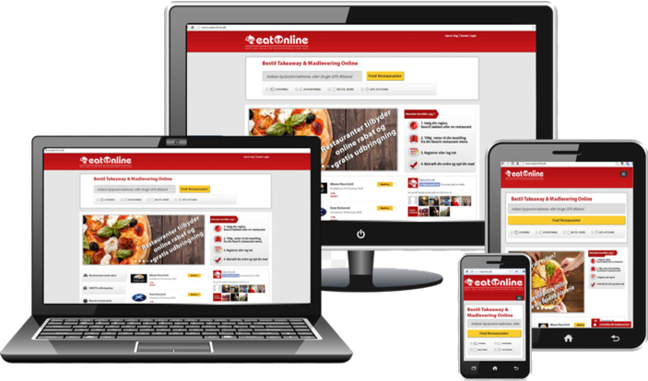

El diseño responsive, adaptativo o responsivo es una técnica de diseño web que
busca la correcta visualización de una misma página en distintos dispositivos. Se caracteriza porque los
layouts (contenidos) e imágenes son fluidos y se usa código media-queries de CSS3.
El responsive design incluye:
- Elementos HTML5
- Consultas de medios CSS
- Unidades CSS
- El uso de varios activos de un solo recurso
- El enfoque mobile first
Ventajas del diseño responsive:
- Más fácil para formularios grandes en donde queremos conseguir mucha información del usuario.
- Diseño, desarrollo y mantenimiento más rentable.
Desventajas del diseño responsive:
- No es 100% adaptable en móviles.
Recomendaciones: Es necesario usar unidades relativas (como el porcentaje de la pantalla), en lugar
de unidades estáticas (como los píxeles).
_________________________________________________